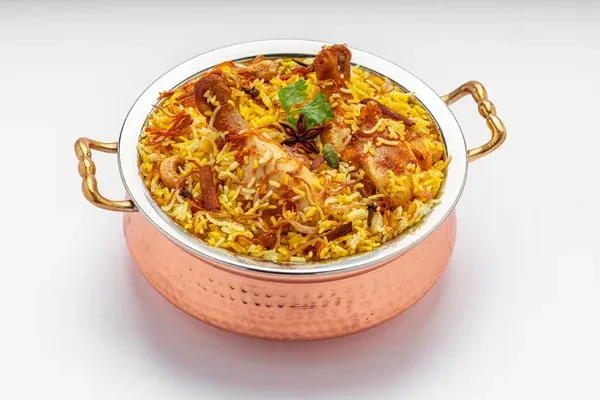
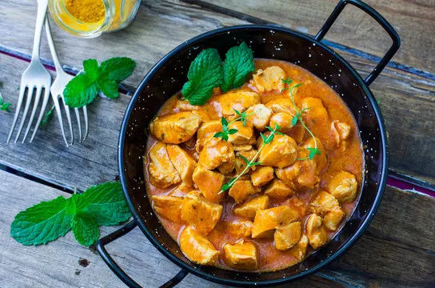
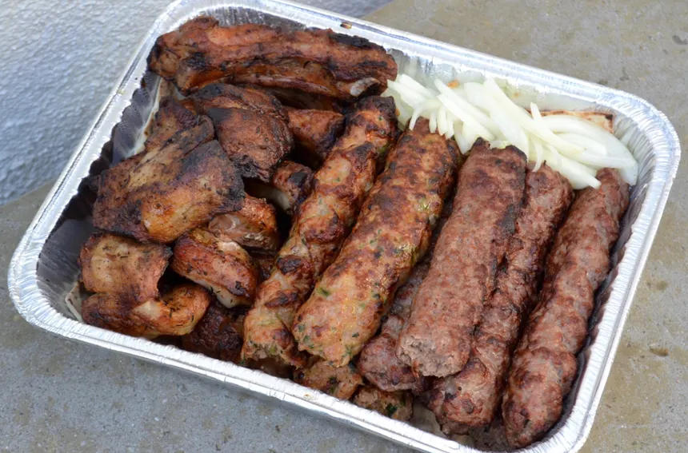
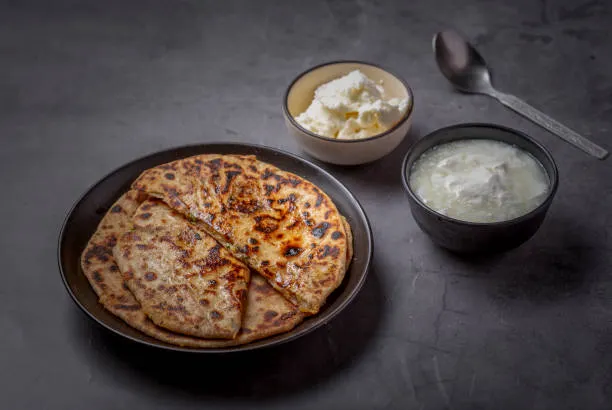
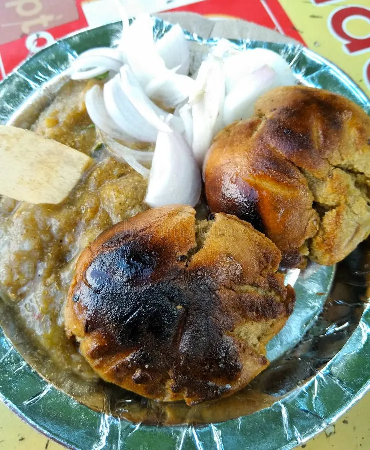

Biryani

The Best !! The OG !! The never replaceable BIRYANI !!
Food !! Often seen as a source for energy, is more than that to me ! Kind of like love to me !! It gives me joy and helps me enjoy my days even when I'm sad or down !!
These are the best foods (according to me OBV)

The Best !! The OG !! The never replaceable BIRYANI !!

India's favourite chicken dish CHICKEN CURRY !!

The life of lucknow, The Kebabs !!

Indian Mom's favorite for their children, Aloo de Parothe !!

Bihar's famous dish, The OG Litti Chokha !!
These are the reviews I got about my favourite foods !!
"Biryani is the best food I've ever had! The flavors are so full ! NGL the top one !!"
"Chicken curry is a banger really. It just need to be perfectly spicy and juicy !"
"The kebabs are really the one of a kind to die for! Perfectly grilled ummmaah !"
"Aloo paratha is my comfort food. Always kills the hunger and best paired with curd !!"
"The OG Litti Chokha. Famous from bihar (also my place) is so good I can't stop yapping about it !!"
Yo I'm Juny !! And this website shows all the love that I have for food !!
According to me food is more than just food to me !! It is the best thing that happens to me in a day.
That's a secret but "Haldiram's Bhujia" is the one !!
Street food is the best !! Nothing comes even close to that !!
Being delusional about starting a restaurant maybe !!